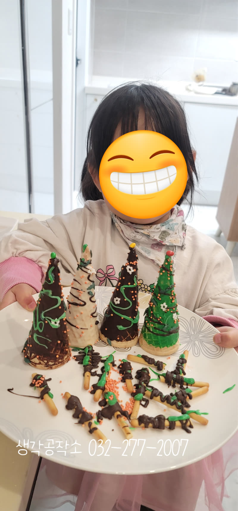
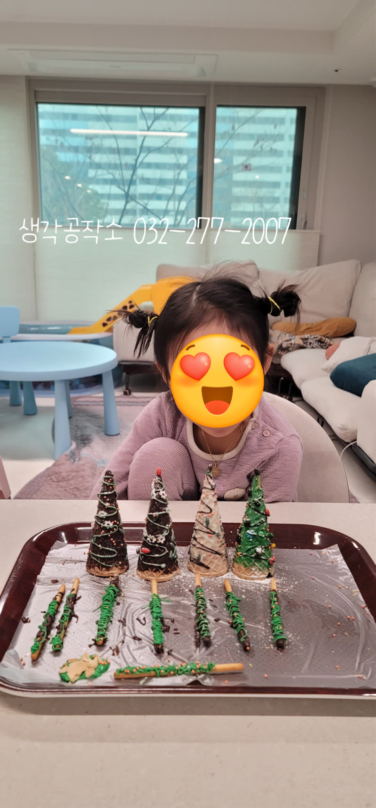
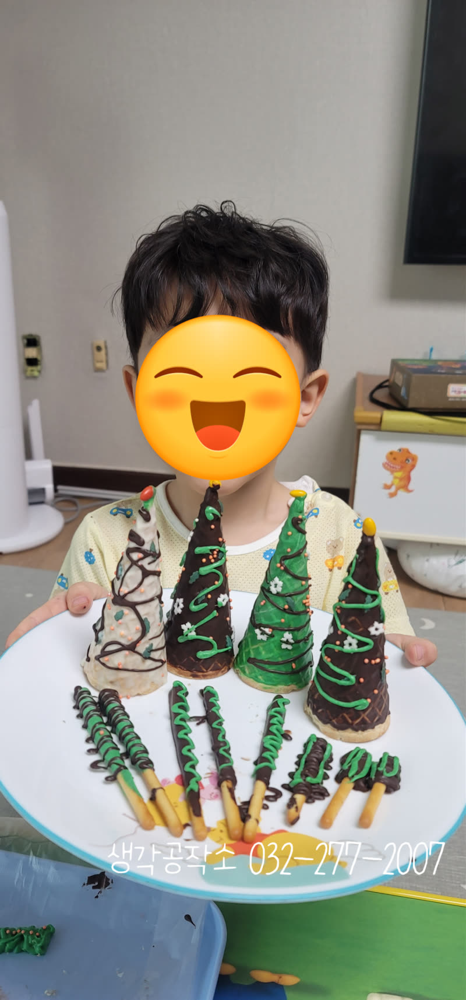
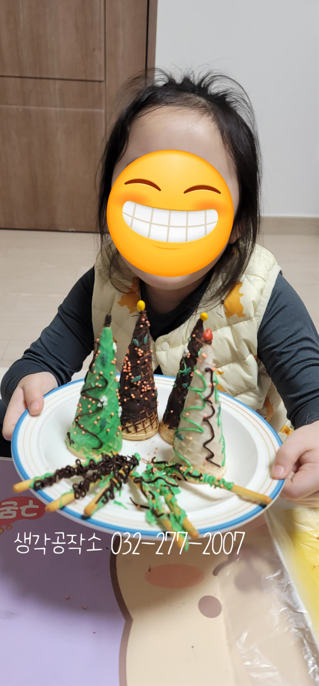
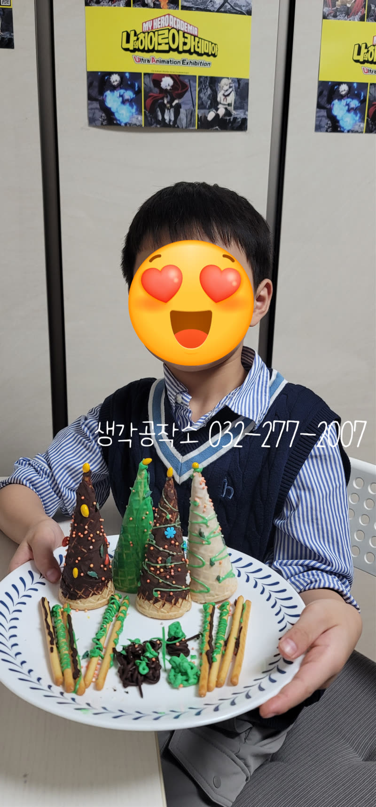
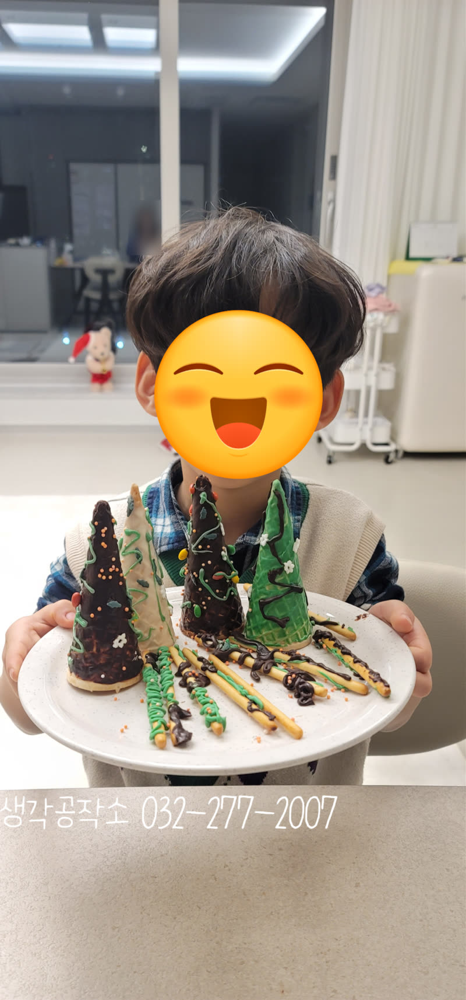
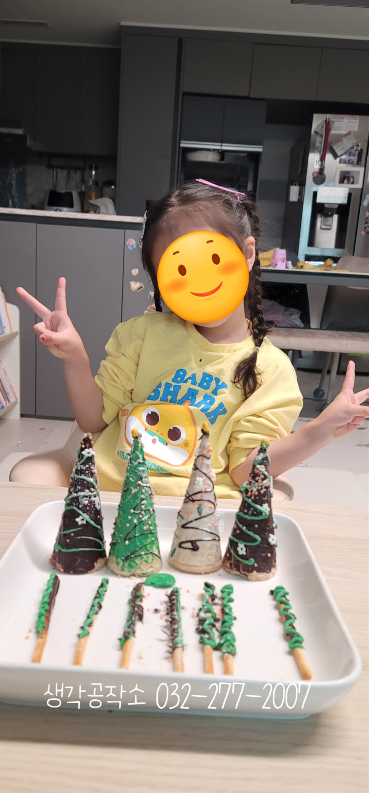

"제가 만들었어요!" 아이들 눈빛이 반짝인 크리스마스 트리 만들기2 ✨
안녕하세요, 생각공작소입니다. :)
오늘은 또 다른 아이들의 활동 사진을 소개합니다.
"선생님, 오늘 뭐 해요?"
12월 어느 날,
아이들이 선생님을 맞이하며 묻습니다.
"오늘은 특별한 거 만들 거야. 먹을 수도 있어!"
그 말 한마디에 아이들의 눈빛이 달라졌습니다. ✨
오늘의 주인공은 먹는 크리스마스 트리입니다! 🎄🍦


테이블 위에 준비된 재료들을 보는 순간,
아이들의 입에서 "우와!" 하는 탄성이 터졌어요.⭐
아이스크림 콘, 반짝이는 초콜릿
알록달록한 엠앤엠즈, 과자 스틱들
"이걸로 트리를 만든다고요?"
"진짜 다 먹어도 돼요?"
재료들을 가만히 들여다보는 아이들 👀
그 호기심 가득한 눈빛에서
벌써 크리스마스가 시작되었답니다.


초콜릿을 손에 묻혀가며 콘에 입히는
아이들의 손길은 진지했어요.
"선생님, 초콜릿이 따뜻해요!"
"여기 더 발라도 돼요?"
따뜻하게 녹은 초콜릿의 감촉,
손끝에서 느껴지는 부드러운 촉감.
어떤 친구는 초록색 아이싱을 선택했고
어떤 친구는 진한 갈색 초콜릿을 골랐어요.
같은 재료지만, 아이들의 선택으로
완전히 다른 트리가 탄생하기 시작했습니다. 🌲



"여기에 별 달아야지!" "저는 여기 엠앤엠즈 붙일래요!"
집중한 아이들의 표정은 마치 예술가 같았어요.
꼬마 손가락으로 조심조심
과자를 하나씩 올리는 모습,
트리 모양을 살피며
어디에 무엇을 붙일지 고민하는 모습.
이 순간만큼은 아이들이 진짜 디자이너였습니다. 🎨
손가락 끝의 세밀한 움직임으로 소근육이 발달하고,
어디에 무엇을 배치할지 생각하며 공간 감각과 창의력이 자랐어요.
자신의 작품을 두 손으로 들어 올린 아이들
어떤 트리는 화려하고, 어떤 트리는 심플하고,
어떤 트리는 독특한 색 조합으로 빛났습니다.
하지만 모두 똑같이 자랑스러워하는 표정이었어요. 😊
"이거 제가 다 만든 거예요!" "멋있죠?"
그 당당한 목소리에서 자신감과 성취감이 느껴졌답니다.
그리고 가장 기다렸던 순간!
"이제 먹어도 돼요?"
한 입 베어 무는 아이들의 얼굴에
행복이 가득 번졌습니다. 💕
직접 만든 트리는 어떤 과자보다 달콤했고,
스스로 완성한 작품은 그 무엇보다 특별했습니다.
생각공작소는 아이들이 즐거운 경험 속에서
자연스럽게 성장하는 순간을 만듭니다.
앞으로도 아이들의 눈빛이 반짝이는
특별한 시간들을 계속 이어가겠습니다. 🌟
저희 생각공작소는 아이들의 가정에서
제공인력 선생님과 1:1로 진행하며,
아이들이 오감으로 세상을 경험하고
스스로 생각하며
성장할 수 있도록 세심하게 함께합니다.
오감 쑥쑥! 생각 쑥쑥!
📞 생각공작소 032-277-2007